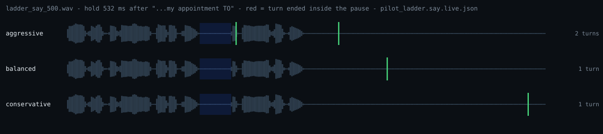
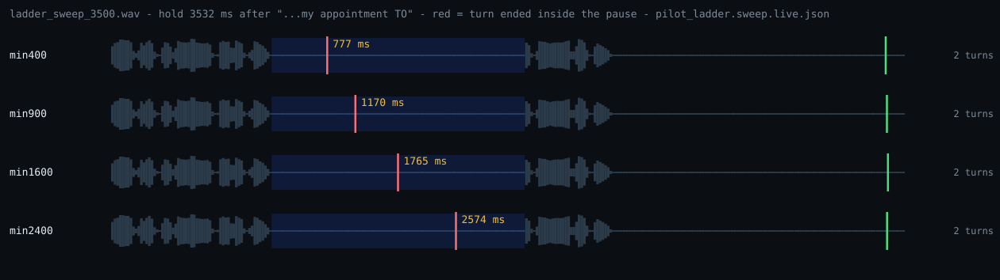

Nod — AssemblyAI Voice Agent Hackathon
Nod · AssemblyAI Voice Agent Hackathon · Sep 2026
Every voice agent picks one
silence threshold.
Nobody published what it actually does.
Nod measures AssemblyAI's turn-detection knobs against the live service,
and moves them mid-call. This deck is what the measurement found —
including the part where it contradicted our own headline.
Deepak Kumaran T S · github.com/DeepakKTS/NOD · every figure regenerable from committed artifacts
1 / 7
1 · The problem
One threshold, tuned for an average speaker,
applied to everyone who calls.
It cuts off the people who pause mid-sentence: older callers, non-native
speakers, anyone reading a number off a card.

Same sentence. Same 532 ms pause after
"…my appointment to". Three configs.
The first splits it in two.
bench/runs/pilot_ladder.say.live.json · aggressive [2855, 4587] · balanced [5406] · image written by scripts/pilot_ladder.py svg
2 / 7
2 · The instrument
A benchmark that cannot run before
the prediction is written down.
predict → commit → run
The runner exits 2 unless the predictions file already exists. A
prediction made after the observation is not a prediction, so the
ordering is a refusal in code rather than a habit — enforced at
runtime, and for the first ladder visible in the history too
(f3e7838 predicts, b7c3ccc
observes).
One clock, on purpose
Firing times are measured from the acoustic end of the audio we are
about to feed, not from the service's word timings — which is how the
fourth fact on the next slide was found.
A fake for CI, a socket for numbers
Tests never touch the network (INV-7). Every published figure comes
from the real API, labelled .live. in the
filename so a chart cannot lose its provenance.
Mutation-tested where it lies
Coverage is deliberately uneven. Full discipline on anything feeding a
published number; thinner on plumbing that fails visibly. A wrong
number does not fail visibly — it prints a plausible one.
src/nod_bench/ladder.py · scripts/pilot_ladder.py · tools/mutate.py · CLAUDE.md §5
3 / 7
3 · What it measured
Four facts about the service.
The confidence threshold is inert for endpointing.
Arms at 0.0 and 1.0 landed 6 ms apart, the high arm earlier. |
69 sessions
ADR-001 |
Turns end on a clamp, not on a gate.
Two parameters, thirteen live rows, all inside 120 ms. |
16 sessions
ADR-055 |
min_turn_silence is continuous to at least 2.4 s.
777 → 2574 ms of patience. max_turn_silence only binds below C, or at end of stream. |
4 sessions
ADR-055 |
The word-timing field is not a silence anchor.
Prefix end reported 560 ms late, continuation 190–250 ms early — same session, so not an offset. |
16 sessions
ADR-055 |
fire_at = prefix_end + clamp(C, min_turn_silence, max_turn_silence) + overhead
C ≈ 590 ms · overhead ≈ 175 ms
C is the service's own commit point. It does not widen with the pause and does not care that the sentence is unfinished.
4 / 7
5 · We published this wrong
Last week the headline was
"the regime is unreachable".
ADR-054. Twelve sessions. Firing time did not move with
the pause, so max_turn_silence never engages, so
"Nod may be a correct controller for a gate that does not engage."
ADR-055. The observation reproduced exactly. The
conclusion was wrong. Two knobs bracket the same quantity and we varied
one. Sweeping the other took four sessions and six minutes.

The red line is where the turn ended. The blue band is the caller's pause.
Only min_turn_silence changes.
The correction also says our own controller points at the wrong knob, and
MIN_MS_CEIL = 900 caps the working one at a third of its
range. Both are still in the code — retuning a control law on one clip of synthetic
speech is tuning by ear.
docs/DECISIONS.md ADR-054, ADR-055 · the pilot's own PASS criterion was being met on `aggressive` the whole time, and was not checked
5 / 7
4 · The controller
Built to exercise the instrument.
A two-gate control law, a per-caller rhythm profiler on fixed-capacity ring
buffers, and a session proxy that rewrites turn-detection config mid-stream —
out of band, never in the audio path.
What is built and tested
Bounded decide(), p99 under 5 ms, no I/O and no
LLM in the decision path. Constant memory per session. Every config change
carries a reason record. Fails soft in a call, loud in dev.
What has not been shown
That the closed loop helps a real caller. The controller has never run on
human speech, and on the one live sweep the controlled arms were identical
to the baseline — the corpus cannot warm the profiler, and the patch census
is unmeasured, not zero.
src/nod_core · ADR-011, ADR-050 · CLAUDE.md §2 invariants INV-1 through INV-9
6 / 7
6 · Honest scope
What this is not.
- The corpus is one macOS say voice, and its own
manifest says it is "not adequate for … any published number". Every figure
here comes from it anyway, and that is stated rather than discovered.
- Nod has never been run on human speech. Track C is written and unrecorded;
Track B, the real atypical-speech corpus, is cut. The project is about callers it
has not met.
- Our controller is aimed at the wrong knob and caps the right one at 900 ms
against a demonstrated 2.4 s. Found by measurement, not fixed.
- Live PCR attributes boundaries to the wrong gap, because it reads the
word-timing field in fact 4. TTL and FRAG do not use it and are unaffected.
- 740 tests, 98.18 % coverage, 184/184 mutations killed certify less than they
look: lines executed, not behaviour asserted, and mutation coverage is
file-granular — a kill proves some test noticed, never which.
- Nod is not the first adaptive endpointer. AssemblyAI's own Voice Agent API
already ships adaptive pacing. Nod is an open one on the streaming STT path, with
the policy written down and the numbers published.
README "Prior art and honest scope" · ADR-053, ADR-055 · data/corpus/source/manifest.json
7 / 7